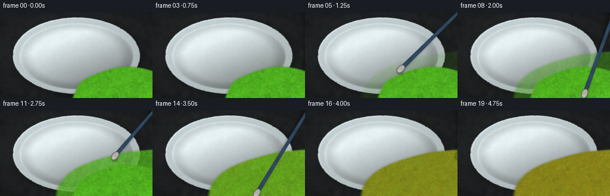
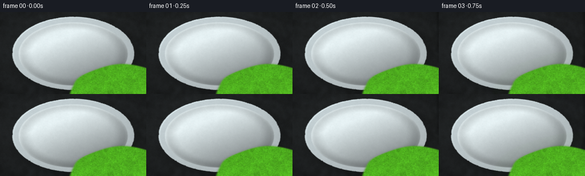
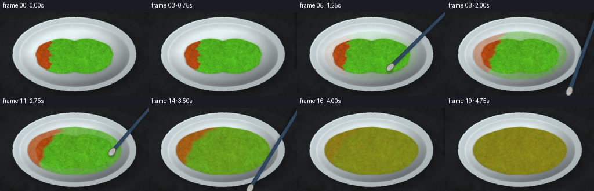
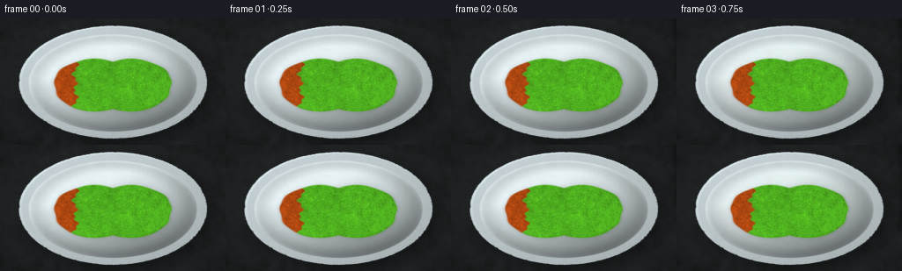
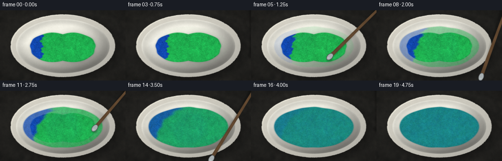
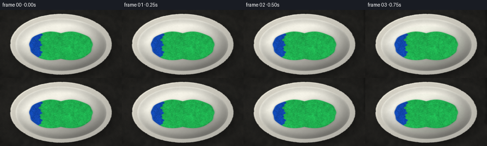

CODING AGENTS AS PIXEL WORLD MODELS
traex/DeepSeek-V4.1-Flash · phygen_123
点击播放 · 原生 RGB 像素
逐轮保存的候选
回放视频、检查图与代码变化。
每份候选均可单独播放。实际图片检查记录在下方工具轨迹中。
候选 01播放与检查图
点击播放 · 原生 RGB 像素


展开代码变化
--- 上一保存版本 +++ 本次保存版本 @@ -0,0 +1,429 @@ +from pathlib import Path + +import cv2 +import numpy as np + +import artifact_io + + +CASE_DIR = Path(__file__).resolve().parent +OUT_W, OUT_H, FRAMES, FPS = 256, 144, 20, 4.0 +RENDER_SCALE = 3 +SIM_SCALE = 1.5 +W, H = OUT_W * RENDER_SCALE, OUT_H * RENDER_SCALE +SW, SH = round(OUT_W * SIM_SCALE), round(OUT_H * SIM_SCALE) + + +def smoothstep(x): + x = np.clip(x, 0.0, 1.0) + return x * x * (3.0 - 2.0 * x) + + +def smooth_noise(h, w, sigma, seed): + rng = np.random.default_rng(seed) + noise = rng.standard_normal((h, w), dtype=np.float32) + noise = cv2.GaussianBlur(noise, (0, 0), sigma) + noise -= float(noise.mean()) + noise /= float(noise.std()) + 1e-6 + return noise + + +def fbm(h, w, seed, octaves=((1.1, 0.52), (3.8, 0.30), (11.0, 0.18))): + out = np.zeros((h, w), np.float32) + for index, (sigma, weight) in enumerate(octaves): + out += weight * smooth_noise(h, w, sigma, seed + index * 37) + out -= float(out.mean()) + out /= float(out.std()) + 1e-6 + return out + + +def ellipse_mask(x, y, cx, cy, rx, ry, feather): + q = np.sqrt(((x - cx) / rx) ** 2 + ((y - cy) / ry) ** 2) + return smoothstep((1.0 - q) / feather) + + +def make_grid(w, h, scale=1.0): + yy, xx = np.mgrid[0:h, 0:w].astype(np.float32) + return xx / scale, yy / scale + + +def build_background(): + x, y = make_grid(W, H) + xn, yn = x / RENDER_SCALE, y / RENDER_SCALE + cx, cy = 128.0, 72.5 + bowl_rx, bowl_ry = 108.0, 65.0 + + grain = fbm(H, W, 310) + broad = fbm(H, W, 311, ((9.0, 0.62), (28.0, 0.38))) + table = np.empty((H, W, 3), np.float32) + table[..., 0] = 43.0 + 2.0 * broad + 1.2 * grain + table[..., 1] = 42.0 + 1.8 * broad + 1.1 * grain + table[..., 2] = 39.0 + 1.6 * broad + 0.9 * grain + + # Subtle directional grain in the work surface. + rows = np.sin((yn * 2.7 + broad * 0.65) * np.pi) * 1.1 + table += rows[..., None] + + # Soft cast shadow and a faint reflected bounce around the bowl. + sx = (xn - (cx + 5.5)) / (bowl_rx + 3.0) + sy = (yn - (cy + 6.5)) / (bowl_ry + 3.0) + shadow_q = np.sqrt(sx * sx + sy * sy) + shadow = smoothstep((1.18 - shadow_q) / 0.42) * 0.62 + shadow = cv2.GaussianBlur(shadow, (0, 0), 3.1 * RENDER_SCALE) + table *= (1.0 - 0.68 * shadow[..., None]) + bounce = np.exp(-(((xn - cx) / 112.0) ** 2 + ((yn - cy) / 70.0) ** 2) * 2.1) + table += np.array([5.0, 6.5, 4.0], np.float32) * bounce[..., None] * 0.18 + + vignette = np.clip(1.0 - 0.30 * (((xn - 128.0) / 148.0) ** 2 + ((yn - 72.0) / 90.0) ** 2), 0.66, 1.0) + table *= vignette[..., None] + + # Ceramic bowl, drawn as nested elliptical forms. + q = np.sqrt(((xn - cx) / bowl_rx) ** 2 + ((yn - cy) / bowl_ry) ** 2) + rim_alpha = smoothstep((1.0 - q) / 0.018) + rim_noise = fbm(H, W, 318, ((2.0, 0.55), (7.0, 0.45))) * 0.004 + rim_alpha *= smoothstep((1.0 - (q + rim_noise)) / 0.018) + + q_inner = np.sqrt(((xn - cx) / 96.5) ** 2 + ((yn - cy - 1.0) / 56.0) ** 2) + inner_alpha = smoothstep((1.0 - q_inner) / 0.022) + + # Raised outer rim with directional highlights. + rim_grad = np.clip((-(xn - cx) / bowl_rx * 0.52 - (yn - cy) / bowl_ry * 0.62) * 0.5 + 0.5, 0.0, 1.0) + rim_col = np.empty((H, W, 3), np.float32) + rim_col[..., 0] = 185.0 + 42.0 * rim_grad + rim_col[..., 1] = 183.0 + 40.0 * rim_grad + rim_col[..., 2] = 174.0 + 36.0 * rim_grad + rim_col += (grain * 1.3)[..., None] + rim_col *= (0.95 + 0.06 * (1.0 - q))[..., None] + + interior = np.empty((H, W, 3), np.float32) + interior[..., 0] = 232.0 + interior[..., 1] = 230.0 + interior[..., 2] = 219.0 + interior += (grain * 1.4 + broad * 0.7)[..., None] + inner_light = np.clip(0.88 - 0.18 * ((xn - cx) / 96.5) - 0.28 * ((yn - cy) / 56.0), 0.52, 1.05) + interior *= inner_light[..., None] + + inner_rim_shadow = smoothstep((q_inner - 0.72) / 0.22) * smoothstep((1.03 - q_inner) / 0.10) + interior *= (1.0 - 0.13 * inner_rim_shadow[..., None]) + + bowl = table.copy() + bowl = bowl * (1.0 - rim_alpha[..., None]) + rim_col * rim_alpha[..., None] + bowl = bowl * (1.0 - inner_alpha[..., None]) + interior * inner_alpha[..., None] + + # Fine specular edge on the upper-left ceramic lip. + lip = np.exp(-((q - 0.972) / 0.012) ** 2) + lip *= np.clip((-(xn - cx) / bowl_rx * 0.6 - (yn - cy) / bowl_ry * 0.8), 0.0, 1.0) + bowl += lip[..., None] * np.array([27.0, 27.0, 24.0], np.float32) + + return np.clip(bowl, 0, 255).astype(np.float32), xn, yn + + +def paint_shape(xn, yn, frame): + # Two equal paint charges spread into one glossy pool as the knife works. + cx, cy = 128.0, 74.0 + n_edge = ( + 2.8 * np.sin((yn - cy) * 0.17 + 0.7) + + 1.6 * np.sin((yn - cy) * 0.41 - 1.1) + + 1.2 * np.cos((xn - cx) * 0.13) + ) + left_q = np.sqrt(((xn - (cx - 20.0)) / 48.0) ** 2 + ((yn - (cy + 1.5)) / 31.0) ** 2) + right_q = np.sqrt(((xn - (cx + 20.0)) / 48.0) ** 2 + ((yn - (cy + 1.5)) / 31.0) ** 2) + initial_q = np.minimum(left_q, right_q) + n_edge * 0.007 + initial = smoothstep((1.0 - initial_q) / 0.055) + + target_q = np.sqrt(((xn - cx) / 83.0) ** 2 + ((yn - (cy + 1.0)) / 42.5) ** 2) + target_q += ( + 1.5 * np.sin(np.arctan2(yn - cy, xn - cx) * 5.0 + 0.4) + + 0.8 * np.sin(np.arctan2(yn - cy, xn - cx) * 9.0 - 1.0) + ) * 0.007 + target = smoothstep((1.0 - target_q) / 0.045) + + spread = smoothstep((frame - 2.0) / 13.0) + alpha = initial * (1.0 - spread) + target * spread + alpha = np.clip(alpha, 0.0, 1.0) + return alpha, initial, target + + +def initial_color_partition(xn, yn): + cy = 74.0 + interface = ( + 128.0 + + 3.8 * np.sin((yn - cy) * 0.22 + 0.35) + + 2.2 * np.sin((yn - cy) * 0.57 - 0.8) + + 1.4 * np.cos((yn - cy) * 0.12) + ) + # b=1 is cobalt blue on the left; b=0 is green on the right. + return smoothstep((interface - xn + 2.0) / 4.0) + + +def tool_state(frame): + if frame < 2 or frame > 16: + return None, 0.0 + cx, cy = 128.0, 74.0 + if frame == 2: + return np.array([218.0, 43.0], np.float32), 0.58 + if frame == 3: + return np.array([198.0, 60.0], np.float32), 0.86 + if frame == 16: + return np.array([205.0, 50.0], np.float32), 0.88 + + phase = frame - 4 + theta = 2.28 + phase * 1.24 + radius = 23.0 + 1.8 * np.sin(phase * 0.72) + return np.array([cx + radius * np.cos(theta), cy + radius * np.sin(theta)], np.float32), 1.0 + + +def simulate_color(): + sx, sy = make_grid(SW, SH) + b = initial_color_partition(sx, sy) + x_grid, y_grid = np.meshgrid(np.arange(SW, dtype=np.float32), np.arange(SH, dtype=np.float32)) + center = np.array([SW * 0.5, SH * 0.514], np.float32) + + fields = [] + tool_positions = [] + for frame in range(FRAMES): + tool_out, strength = tool_state(frame) + if tool_out is None: + tool_sim = None + else: + tool_sim = tool_out * (SW / OUT_W) + tool_positions.append(tool_sim) + + if frame >= 4 and frame <= 15 and strength > 0: + substeps = 5 + for sub in range(substeps): + phase = frame + (sub + 1.0) / substeps + phase_index = int(np.floor(phase)) + frac = phase - phase_index + p0, s0 = tool_state(phase_index) + p1, s1 = tool_state(min(phase_index + 1, FRAMES - 1)) + if p0 is None or p1 is None: + continue + p = (p0 * (1.0 - frac) + p1 * frac) * (SW / OUT_W) + local_s = s0 * (1.0 - frac) + s1 * frac + + dx = x_grid - p[0] + dy = y_grid - p[1] + r2 = dx * dx + dy * dy + local = np.exp(-r2 / (2.0 * 19.0**2)) + vortex = 8.2 * local + + gx = x_grid - center[0] + gy = y_grid - center[1] + global_w = np.exp(-(gx * gx + gy * gy) / (2.0 * 105.0**2)) + vx = -dy / (np.sqrt(r2) + 2.5) * vortex - gy * 0.018 * global_w + vy = dx / (np.sqrt(r2) + 2.5) * vortex + gx * 0.018 * global_w + + # A small inward pull keeps the stirred pool from drifting apart. + rr = np.sqrt((x_grid - center[0]) ** 2 + (y_grid - center[1]) ** 2) + vx -= (x_grid - center[0]) / (rr + 3.0) * 0.55 * local_s * local + vy -= (y_grid - center[1]) / (rr + 3.0) * 0.55 * local_s * local + + map_x = (x_grid - vx).astype(np.float32) + map_y = (y_grid - vy).astype(np.float32) + b = cv2.remap(b, map_x, map_y, cv2.INTER_CUBIC, borderMode=cv2.BORDER_REFLECT_101) + b = np.clip(b, 0.0, 1.0) + + # Stirring locally homogenizes pigment while diffusion softens ribbons. + b = b * (1.0 - 0.012 * local) + 0.5 * (0.012 * local) + + if frame >= 3: + sigma = 0.55 + 0.08 * max(0, frame - 3) + b = cv2.GaussianBlur(b, (0, 0), sigma) + + # After vigorous stirring, the pigment rapidly resolves to one teal field. + global_mix = 0.0 + if frame >= 11: + global_mix = 0.16 * smoothstep((frame - 10.0) / 4.0) + if frame >= 15: + global_mix = max(global_mix, smoothstep((frame - 14.0) / 3.0)) + b = b * (1.0 - global_mix) + 0.5 * global_mix + b = np.clip(b, 0.0, 1.0) + + fields.append(b.astype(np.float32)) + + return fields, tool_positions + + +def render_tool(image, frame, tool_pos, xn, yn): + if tool_pos is None: + return image + + p = np.array([tool_pos[0] * RENDER_SCALE, tool_pos[1] * RENDER_SCALE], np.float32) + anchor = np.array([W + 31.0, -28.0], np.float32) + direction = p - anchor + direction /= np.linalg.norm(direction) + 1e-6 + normal = np.array([-direction[1], direction[0]], np.float32) + + shadow = np.zeros((H, W), np.float32) + a_s = np.clip(anchor + np.array([5.0, 7.0]), [0, 0], [W - 1, H - 1]).astype(np.int32) + p_s = np.clip(p + np.array([5.0, 7.0]), [0, 0], [W - 1, H - 1]).astype(np.int32) + cv2.line(shadow, tuple(a_s), tuple(p_s), 1.0, int(6.3 * RENDER_SCALE), cv2.LINE_AA) + cv2.circle(shadow, tuple(p_s), int(6.2 * RENDER_SCALE), 1.0, -1, cv2.LINE_AA) + shadow = cv2.GaussianBlur(shadow, (0, 0), 1.5 * RENDER_SCALE) + image *= (1.0 - 0.23 * shadow[..., None]) + + # Tapered wooden handle. + handle_mask = np.zeros((H, W), np.float32) + pts = np.array( + [ + anchor + normal * 2.0 * RENDER_SCALE, + p - direction * 7.5 * RENDER_SCALE + normal * 3.4 * RENDER_SCALE, + p - direction * 7.5 * RENDER_SCALE - normal * 3.4 * RENDER_SCALE, + anchor - normal * 2.0 * RENDER_SCALE, + ], + np.int32, + ) + cv2.fillConvexPoly(handle_mask, pts, 1.0, cv2.LINE_AA) + + across = (xn * RENDER_SCALE - anchor[0]) * normal[0] + (yn * RENDER_SCALE - anchor[1]) * normal[1] + handle_col = np.empty((H, W, 3), np.float32) + handle_col[..., 0] = 88.0 + 12.0 * np.exp(-(across / (2.7 * RENDER_SCALE)) ** 2) + handle_col[..., 1] = 65.0 + 9.0 * np.exp(-(across / (2.7 * RENDER_SCALE)) ** 2) + handle_col[..., 2] = 43.0 + 7.0 * np.exp(-(across / (2.7 * RENDER_SCALE)) ** 2) + grain_line = 0.5 + 0.5 * np.sin((xn * direction[0] + yn * direction[1]) * 0.23 + 1.7) + handle_col *= (0.93 + 0.08 * grain_line)[..., None] + image = image * (1.0 - handle_mask[..., None]) + handle_col * handle_mask[..., None] + + # Stainless palette-knife blade at the contact point. + blade_center = p - direction * 3.5 * RENDER_SCALE + blade = np.zeros((H, W), np.float32) + cv2.ellipse( + blade, + tuple(np.round(blade_center).astype(int)), + (int(7.5 * RENDER_SCALE), int(4.6 * RENDER_SCALE)), + float(np.degrees(np.arctan2(direction[1], direction[0]))), + 0, + 360, + 1.0, + -1, + cv2.LINE_AA, + ) + blade_edge = np.zeros((H, W), np.float32) + cv2.ellipse( + blade_edge, + tuple(np.round(blade_center).astype(int)), + (int(7.8 * RENDER_SCALE), int(4.9 * RENDER_SCALE)), + float(np.degrees(np.arctan2(direction[1], direction[0]))), + 0, + 360, + 1.0, + int(1.1 * RENDER_SCALE), + cv2.LINE_AA, + ) + image = image * (1.0 - blade_edge[..., None]) + np.array([80.0, 83.0, 84.0], np.float32) * blade_edge[..., None] + + metal_light = np.exp(-(((xn - blade_center[0]) * normal[0] + (yn - blade_center[1]) * normal[1]) / (2.1 * RENDER_SCALE)) ** 2) + blade_col = np.empty((H, W, 3), np.float32) + blade_col[..., 0] = 169.0 + 47.0 * metal_light + blade_col[..., 1] = 175.0 + 48.0 * metal_light + blade_col[..., 2] = 176.0 + 47.0 * metal_light + image = image * (1.0 - blade[..., None]) + blade_col * blade[..., None] + + # A bright wet contact glint anchors the blade to the paint. + glint = np.exp(-(((xn - p[0] / RENDER_SCALE) / 2.1) ** 2 + ((yn - p[1] / RENDER_SCALE) / 1.2) ** 2)) + image += glint[..., None] * np.array([25.0, 28.0, 27.0], np.float32) + return image + + +def render_frame(frame, b_sim, tool_pos, bg, xn, yn): + alpha_sim, initial_sim, _ = paint_shape(xn * SIM_SCALE / RENDER_SCALE, yn * SIM_SCALE / RENDER_SCALE, frame) + # paint_shape expects final-pixel coordinates. + alpha = cv2.resize(alpha_sim, (W, H), interpolation=cv2.INTER_CUBIC) + initial = cv2.resize(initial_sim, (W, H), interpolation=cv2.INTER_CUBIC) + b = cv2.resize(b_sim, (W, H), interpolation=cv2.INTER_CUBIC) + b = np.clip(b, 0.0, 1.0) + + blue = np.array([18.0, 74.0, 181.0], np.float32) + green = np.array([32.0, 181.0, 82.0], np.float32) + tex_blue = fbm(H, W, 401, ((1.5, 0.48), (5.0, 0.32), (15.0, 0.20))) + tex_green = fbm(H, W, 402, ((1.4, 0.50), (6.0, 0.30), (18.0, 0.20))) + blue_varied = blue[None, None, :] * (1.0 + tex_blue[..., None] * 0.055) + green_varied = green[None, None, :] * (1.0 + tex_green[..., None] * 0.050) + color = blue_varied * b[..., None] + green_varied * (1.0 - b[..., None]) + + # Subtle inter-pigment sheen rather than a flat mathematical blend. + teal_glow = (0.5 - np.abs(b - 0.5)) * 2.0 + color += np.array([1.5, 8.0, 8.0], np.float32) * (teal_glow * alpha)[..., None] + + edge = np.clip(alpha - cv2.erode(alpha, np.ones((5, 5), np.uint8)), 0.0, 1.0) + edge = cv2.GaussianBlur(edge, (0, 0), 1.1 * RENDER_SCALE) + color *= (1.0 - 0.16 * edge[..., None]) + + # Thick paint relief, with two initial mounds that settle as they mix. + mound_phase = smoothstep((frame - 2.0) / 10.0) + mound_l = np.exp(-(((xn - 108.0) / 48.0) ** 2 + ((yn - 75.5) / 31.0) ** 2) * 1.8) + mound_r = np.exp(-(((xn - 148.0) / 48.0) ** 2 + ((yn - 75.5) / 31.0) ** 2) * 1.8) + relief_noise = fbm(H, W, 444, ((2.0, 0.58), (8.0, 0.29), (22.0, 0.13))) + height = alpha * (1.25 + 0.12 * relief_noise) + (mound_l + mound_r) * (1.0 - mound_phase) * 0.68 + height = cv2.GaussianBlur(height.astype(np.float32), (0, 0), 1.0 * RENDER_SCALE) + + grad_x = cv2.Sobel(height, cv2.CV_32F, 1, 0, ksize=3) / (8.0 * RENDER_SCALE) + grad_y = cv2.Sobel(height, cv2.CV_32F, 0, 1, ksize=3) / (8.0 * RENDER_SCALE) + nx = -grad_x + ny = -grad_y + nz = np.ones_like(nx) * 0.68 + norm = np.sqrt(nx * nx + ny * ny + nz * nz) + 1e-6 + nx /= norm + ny /= norm + nz /= norm + light = np.array([-0.56, -0.64, 0.53], np.float32) + light /= np.linalg.norm(light) + diffuse = np.clip(nx * light[0] + ny * light[1] + nz * light[2], 0.0, 1.0) + half_vec = light + np.array([0.0, 0.0, 1.0], np.float32) + half_vec /= np.linalg.norm(half_vec) + specular = np.clip(nx * half_vec[0] + ny * half_vec[1] + nz * half_vec[2], 0.0, 1.0) ** 42 + shade = 0.78 + 0.34 * diffuse + color *= shade[..., None] + color += specular[..., None] * np.array([74.0, 80.0, 76.0], np.float32) * (0.45 + 0.55 * alpha[..., None]) + + # Tiny wet speckles give the paint a pigment-rich, hand-mixed surface. + speckle = fbm(H, W, 455, ((0.85, 0.62), (2.2, 0.38))) + color += (speckle * 2.0)[..., None] * np.array([0.9, 1.0, 0.9], np.float32) + + # Contact shadow just outside the pool. + contact = smoothstep((alpha - 0.04) / 0.28) + contact = cv2.GaussianBlur(contact, (0, 0), 2.0 * RENDER_SCALE) + contact_edge = np.clip(contact - alpha, 0.0, 1.0) + shadowed_bg = bg * (1.0 - 0.12 * contact_edge[..., None]) + + image = shadowed_bg * (1.0 - alpha[..., None]) + color * alpha[..., None] + image = np.clip(image, 0.0, 255.0) + image = render_tool(image, frame, tool_pos, xn, yn) + + # A restrained studio vignette and output grain. + final_grain = smooth_noise(H, W, 0.55, 509 + frame) * 0.75 + image += final_grain[..., None] + image = np.clip(image, 0.0, 255.0) + return image.astype(np.uint8) + + +def main(): + bg, xn, yn = build_background() + fields, tool_positions = simulate_color() + frames = [] + for frame, field in enumerate(fields): + frame_img = render_frame(frame, field, tool_positions[frame], bg, xn, yn) + frame_img = cv2.resize(frame_img, (OUT_W, OUT_H), interpolation=cv2.INTER_AREA) + frames.append(cv2.cvtColor(frame_img, cv2.COLOR_BGR2RGB)) + + frames = np.stack(frames, axis=0) + assert frames.shape == (FRAMES, OUT_H, OUT_W, 3) + assert frames.dtype == np.uint8 + artifact_io.save(frames, CASE_DIR) + + # Also provide a directly playable video file when the local OpenCV build supports MP4. + writer = cv2.VideoWriter( + str(CASE_DIR / "mixing_paint.mp4"), + cv2.VideoWriter_fourcc(*"mp4v"), + FPS, + (OUT_W, OUT_H), + ) + if writer.isOpened(): + for frame in frames: + writer.write(cv2.cvtColor(frame, cv2.COLOR_RGB2BGR)) + writer.release() + + +if __name__ == "__main__": + main()
候选 02播放与检查图
点击播放 · 原生 RGB 像素


展开代码变化
--- 上一保存版本
+++ 本次保存版本
@@ -327,8 +327,7 @@
def render_frame(frame, b_sim, tool_pos, bg, xn, yn):
- alpha_sim, initial_sim, _ = paint_shape(xn * SIM_SCALE / RENDER_SCALE, yn * SIM_SCALE / RENDER_SCALE, frame)
- # paint_shape expects final-pixel coordinates.
+ alpha_sim, initial_sim, _ = paint_shape(xn, yn, frame)
alpha = cv2.resize(alpha_sim, (W, H), interpolation=cv2.INTER_CUBIC)
initial = cv2.resize(initial_sim, (W, H), interpolation=cv2.INTER_CUBIC)
b = cv2.resize(b_sim, (W, H), interpolation=cv2.INTER_CUBIC)
候选 03播放与检查图
点击播放 · 原生 RGB 像素


展开代码变化
--- 上一保存版本
+++ 本次保存版本
@@ -404,7 +404,7 @@
for frame, field in enumerate(fields):
frame_img = render_frame(frame, field, tool_positions[frame], bg, xn, yn)
frame_img = cv2.resize(frame_img, (OUT_W, OUT_H), interpolation=cv2.INTER_AREA)
- frames.append(cv2.cvtColor(frame_img, cv2.COLOR_BGR2RGB))
+ frames.append(frame_img)
frames = np.stack(frames, axis=0)
assert frames.shape == (FRAMES, OUT_H, OUT_W, 3)
可观测工具轨迹
实际执行的命令与返回图片。
命令 1exit 0
/bin/bash -c "pwd && rg --files -g '"'!**/.git/**'"' | sed -n '1,200p'"
命令 2exit 0
/bin/bash -c 'cat prompt.txt'
命令 3exit 0
/bin/bash -c 'cat GENERATION_RULES.md'
命令 4exit 0
/bin/bash -c 'cat task_spec.json'
命令 5exit 0
/bin/bash -c "sed -n '1,240p' artifact_io.py"
命令 6exit 0
/bin/bash -c "sed -n '1,260p' player_template.html"
命令 7exit 0
/bin/bash -c "python - <<'PY' import importlib.util for m in ['numpy','PIL','cv2','imageio','scipy','matplotlib']: print(m, bool(importlib.util.find_spec(m))) PY which ffmpeg || true ffmpeg -version 2>/dev/null | head -2 || true"
命令 8exit 1
/bin/bash -c 'python generate.py'
命令 9exit 0
/bin/bash -c 'python generate.py'
命令 10exit 127
/bin/bash -c 'ls -lh inspection.png transition_check.png frames/00.png frames/19.png mixing_paint.mp4 2>/dev/null; file mixing_paint.mp4 2>/dev/null'
命令 11exit 0
/bin/bash -c 'which chafa || which viu || which img2txt || which jp2 || true'
命令 12exit 0
/bin/bash -c "python - <<'PY'
from PIL import Image
import numpy as np
for i in [0,2,4,8,12,16,19]:
a=np.array(Image.open(f'frames/{i:02d}.png'))
print(i, 'mean', a.mean((0,1)).round(1), 'std',a.std((0,1)).round(1),'center',a[50:90,80:175].mean((0,1)).round(1))
PY"命令 13exit 0
/bin/bash -c "python - <<'PY'
from PIL import Image
import numpy as np
im=Image.open('frames/00.png')
# ANSI truecolor half-block preview, preserving rough luminance and hue.
a=np.asarray(im.resize((64,36)))
chars=' .:-=+*#%@'
for y in range(0,36,2):
row=''
for x in range(64):
c=a[y:y+2,x].mean(0)
lum=(.2126*c[0]+.7152*c[1]+.0722*c[2])/255
row+=chars[min(len(chars)-1,int(lum*(len(chars)-1)))]
print(row)
PY"命令 14exit 0
/bin/bash -c "python - <<'PY'
from PIL import Image
import numpy as np
for idx in [0,2,4,8,12,15,16,19]:
a=np.asarray(Image.open(f'frames/{idx:02d}.png')).astype(float)
# Print HSV-ish summary over a central oval corresponding to paint area
yy,xx=np.mgrid[:144,:256]
m=((xx-128)/86)**2+((yy-74)/44)**2<1
c=a[m]
print(idx, 'paint rgb',np.median(c,axis=0).astype(int), 'blue fraction',np.mean(c[:,2]>c[:,1]+10).round(3), 'green fraction',np.mean(c[:,1]>c[:,2]+10).round(3))
PY"命令 15exit 0
/bin/bash -c 'python generate.py'
命令 16exit 0
/bin/bash -c "python - <<'PY'
from PIL import Image
import numpy as np
for idx in [0,2,4,8,12,15,16,19]:
a=np.asarray(Image.open(f'frames/{idx:02d}.png')).astype(float)
yy,xx=np.mgrid[:144,:256]
m=((xx-128)/86)**2+((yy-74)/44)**2<1
c=a[m]
print(idx, 'paint rgb',np.median(c,axis=0).astype(int), 'blue',np.mean(c[:,2]>c[:,1]+10).round(3), 'green',np.mean(c[:,1]>c[:,2]+10).round(3))
PY"命令 17exit 0
/bin/bash -c "python - <<'PY'
from PIL import Image
import numpy as np
im=Image.open('frames/00.png')
a=np.asarray(im.resize((64,36)))
chars=' .:-=+*#%@'
for y in range(0,36,2):
row=''
for x in range(64):
c=a[y:y+2,x].mean(0)
lum=(.2126*c[0]+.7152*c[1]+.0722*c[2])/255
row+=chars[min(len(chars)-1,int(lum*(len(chars)-1)))]
print(row)
PY"命令 18exit 0
/bin/bash -c 'python generate.py'
命令 19exit 0
/bin/bash -c "python - <<'PY'
from PIL import Image
import numpy as np
for idx in [0,2,4,8,12,15,16,19]:
a=np.asarray(Image.open(f'frames/{idx:02d}.png')).astype(float)
yy,xx=np.mgrid[:144,:256]
m=((xx-128)/86)**2+((yy-74)/44)**2<1
c=a[m]
print(idx, 'median',np.median(c,axis=0).astype(int), 'blue%',round(np.mean(c[:,2]>c[:,1]+10),3),'green%',round(np.mean(c[:,1]>c[:,2]+10),3))
PY"命令 20exit 0
/bin/bash -c "python - <<'PY'
from pathlib import Path
import numpy as np, cv2, json
root=Path('.')
frames=sorted((root/'frames').glob('*.png'))
z=np.load(root/'pixels.npz')['pixels']
print('frame_pngs',len(frames),'npz_shape',z.shape,'npz_dtype',z.dtype)
cap=cv2.VideoCapture(str(root/'mixing_paint.mp4'))
print('video_opened',cap.isOpened(),'frames',int(cap.get(cv2.CAP_PROP_FRAME_COUNT)),'fps',cap.get(cv2.CAP_PROP_FPS),'size',(int(cap.get(cv2.CAP_PROP_FRAME_WIDTH)),int(cap.get(cv2.CAP_PROP_FRAME_HEIGHT))))
ok=True; decoded=0
while True:
ret,frame=cap.read()
if not ret: break
decoded+=1
print('decoded_frames',decoded)
imgs=np.stack([cv2.imread(str(p))[:,:,::-1] for p in frames]).astype(np.float32)
print('temporal_mae', [round(float(np.abs(imgs[i]-imgs[i-1]).mean()),2) for i in range(1,20)])
print('first_last_mae',round(float(np.abs(imgs[-1]-imgs[0]).mean()),2))
print('index_exists',(root/'index.html').is_file(),'index_bytes',(root/'index.html').stat().st_size)
print('all_png_shapes',sorted(set(cv2.imread(str(p)).shape for p in frames)))
PY"命令 21exit 0
/bin/bash -c "python - <<'PY'
from PIL import Image
import numpy as np
# quantify pigment mixing and check paint area coverage
for idx in [0,4,8,12,15,16,19]:
a=np.asarray(Image.open(f'frames/{idx:02d}.png')).astype(np.float32)
yy,xx=np.mgrid[:144,:256]
m=((xx-128)/85)**2+((yy-74)/43)**2<1
c=a[m]
# normalized chroma spread, large while distinct pigments remain
chroma=np.linalg.norm(c-c.mean(0),axis=1)
print(idx,'chroma_std',round(float(chroma.std()),1),'mean_rgb',c.mean(0).round(1).tolist())
PY"保存候选 3 份；完成命令 21 次；可验证图片返回 0 张。原始 API 响应与完整日志保留在本地。